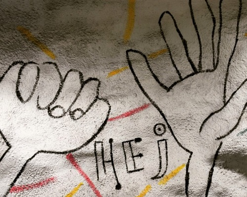
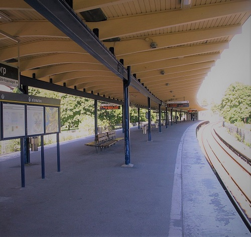
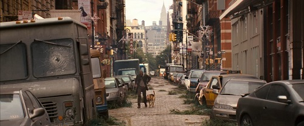
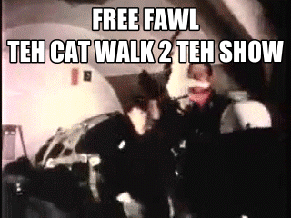
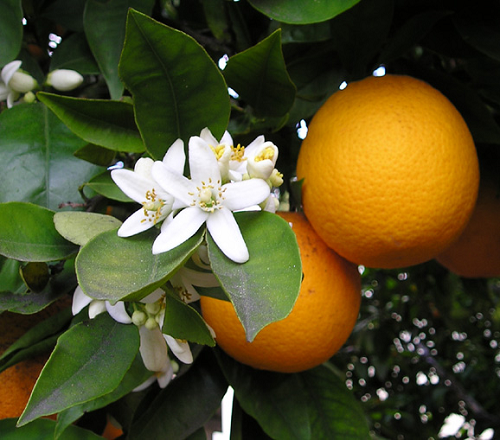
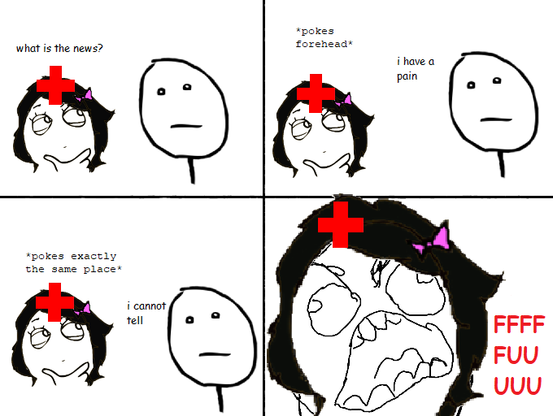

Ten Years Later
Last year in 2018, we celebrated GPH's 1st anniversary: https://2018.galacticpuzzlehunt.com/puzzle/overtime. This year, let's go a little farther back.
Come below - it’s out of the long.

 




1230186684530117755130494958384962720772853569595334792197322452151726400507263657518745202199786469389956474942774063845925192557326303453731548268507917026122142913461670429214311602221240479274737794080665351419597459856902143413 (30)